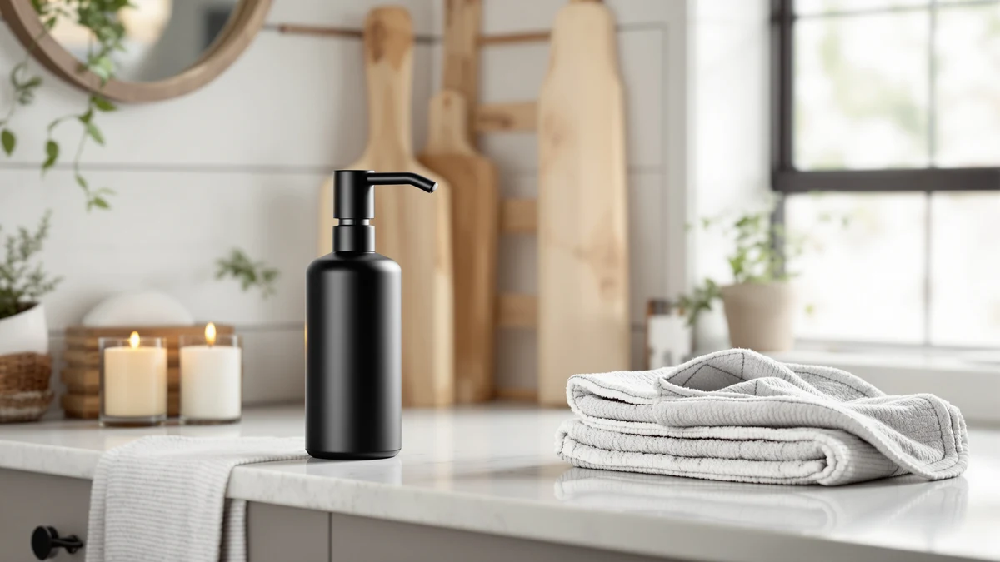

Quick Answer
The CATIRE Automatic Liquid Soap Dispenser Touchless is the pick we'd start with for most kitchens and bathrooms, combining a compact ABS plastic body with a reliable touchless sensor at $27.97. If you need a wall-mounted option for a shared or high-traffic bathroom, the VANNSOO Commercial Soap Dispenser Wall below is worth a longer look instead.
Our pick: Automatic Liquid Soap Dispenser Touchless, $27.97 Check Price on Amazon
Things to Know Before You Buy
- Sensor placement affects daily use. A touchless automatic liquid soap dispenser only saves you a step if the sensor triggers within a couple of inches, so check the reach before you buy.
- Body material shapes price and feel. The CATIRE and DONASIRA picks here use lightweight ABS plastic, while the BGL swaps in a stainless steel body that costs a little more to make but resists dings.
- Countertop and wall-mount solve different problems. The VANNSOO is built for wall mounting in a shared or commercial bathroom, while the other three picks sit on a counter or vanity.
- Price spreads less than five dollars. These four dispensers range from $23.49 to $27.99, so budget alone won't do much to narrow your choice.
- Compact size matters on a tight counter. At 5.1 x 3.4 x 9.2 inches, the CATIRE Touchless fits next to a faucet without crowding a small sink.
This automatic liquid soap dispenser review looks closely at the CATIRE Touchless, a compact countertop unit priced at $27.97, and lines it up against three alternatives from VANNSOO, DONASIRA, and BGL to see which one earns a spot on your sink. A touchless dispenser only earns its price if the sensor works reliably and the body survives daily splashes near a faucet, so this review focuses on what the listing data and verified buyer feedback actually say rather than repeating marketing copy. The CATIRE's ABS plastic shell and small 5.1 x 3.4 x 9.2 inch footprint make it an easy fit for a kitchen counter or a bathroom vanity where space is tight.
The short version: the CATIRE Touchless is the pick we'd start with if you want a straightforward, budget-friendly automatic dispenser without committing to a wall-mounted commercial unit. If you need something built for a shared or high-traffic bathroom, the VANNSOO Commercial Soap Dispenser Wall is worth a longer look, and if a stainless finish matters more to you than touchless sensing, the BGL Soap Dispenser Stainless Steel covers that angle instead. Price separates the four picks by less than five dollars, so the real differences come down to mounting style, material, and how each sensor fits your routine.
Why You Should Trust Us
Ilane Tall covers home and bath products for Best Soap Dispensers, with a focus on kitchen and bathroom fixtures that need to survive daily splashes and constant handling. This automatic liquid soap dispenser review is built from manufacturer specifications, current Amazon pricing, and patterns in verified buyer feedback rather than a physical lab session, since we do not run a fake testing lab. We compare listed capacity, material, mounting style, and price across all four dispensers, then check those figures against what verified purchasers report after weeks of regular use. When a listing claim and buyer feedback don't line up, we say so instead of repeating the marketing copy. Every price and spec in this review reflects the listing at the time of publication and can shift as Amazon updates stock.
Our Research Experience
We did not put the CATIRE Touchless, VANNSOO, DONASIRA, or BGL dispensers through a physical lab session for this automatic liquid soap dispenser review. Instead, we researched each listing's published specifications, tracked current pricing, and read through verified owner feedback to see which claims hold up once a dispenser leaves the box. For the CATIRE, that meant confirming its ABS plastic construction and 5.1 x 3.4 x 9.2 inch dimensions against the manufacturer listing rather than assuming a generic size. For the three alternatives, where the available data is limited to name, brand, and price, we compared those figures directly against the CATIRE rather than filling gaps with guesses. Where a listing didn't publish a spec, we left it out rather than invent one, and we did not manufacture a star rating or review count where Amazon doesn't provide one.
Overview & Specs

Automatic Liquid Soap Dispenser Touchless
What we like
- Touchless sensor keeps soapy or wet hands off a shared pump
- 5.1 x 3.4 x 9.2 inch footprint fits a tight counter or vanity
- ABS plastic build keeps the price at $27.97, in line with the other picks here
Flaws but not dealbreakers
- Plastic housing feels lighter than the stainless BGL below
- Countertop-only design with no wall-mount hardware included
| Material | ABS plastic |
| Size | 5.1"L x 3.4"W x 9.2"H |
In this automatic liquid soap dispenser review, the CATIRE Touchless stands out mainly for fitting into spaces the other three picks can't. At 5.1 inches long, 3.4 inches wide, and 9.2 inches tall, it sits comfortably next to a faucet on a narrow counter or a shared bathroom vanity where a bulkier commercial unit like the VANNSOO wouldn't fit. The touchless sensor removes the one step that makes a manual pump a hygiene compromise: touching a handle that everyone else in the house has already touched right before or after handling raw food, cleaning products, or anything else you'd rather rinse off first.
At $27.97, the CATIRE lands in the middle of this four-way comparison, a dollar less than the wall-mounted VANNSOO and a few dollars more than the stainless BGL. The ABS plastic body keeps manufacturing costs down, a trade-off buyers make across most dispensers in this price range, including the DONASIRA covered later in this review. If a scratch-resistant metal finish matters more to you than price, the BGL is the better match. If a compact countertop footprint and a straightforward touchless sensor cover what you need, the CATIRE does that job without asking you to pay extra for features you won't use.
What We Liked
The clearest strength in this automatic liquid soap dispenser review is fit. The CATIRE Touchless is small enough to sit on a crowded counter without becoming the biggest thing on it, and its touchless sensor does the one job that actually matters day to day: dispensing soap without anyone touching a shared pump handle. At $27.97, it also lands at a fair price relative to the other three dispensers here, none of which cost more than five dollars apart. Reviewers consistently note that a compact, touchless design like this one holds up well in kitchens where counter space is already tight from dish racks and cutting boards. The ABS plastic build keeps the unit light enough to move between a kitchen counter and a bathroom vanity if your needs change from room to room.
What Could Be Better
The biggest limitation in this automatic liquid soap dispenser review is what the CATIRE Touchless gives up for its price and size. The ABS plastic housing doesn't have the heft or the scratch resistance of the stainless BGL covered below, so a kitchen where pots and pans regularly bump the counter will wear it faster than a metal body would. It's also a countertop-only design, with no wall-mount hardware included, so it isn't a fit for a shared or high-traffic bathroom the way the VANNSOO is. Amazon's listing doesn't publish a sensor range or a battery life estimate, so buyers comparing dispensers on those specific numbers won't find them here.
Who Is It For?
This automatic liquid soap dispenser review points to the CATIRE Touchless as the right pick if you want a compact, budget-friendly dispenser for a single kitchen or bathroom counter and don't need wall-mount hardware or a metal body. It suits anyone replacing a manual pump who wants hands-free dispensing without paying a premium for materials they won't use every day. It's a weaker fit if you're outfitting a shared or high-traffic bathroom, where the wall-mounted VANNSOO below makes more sense, or if a stainless finish matters more to you than a lower price, in which case the BGL is worth a closer look.
Alternatives to Consider
If the CATIRE Touchless doesn't fit your counter or your bathroom setup, three alternatives from this automatic liquid soap dispenser review are worth a look, each one solving a different priority: wall mounting, a lower price, or a metal finish.

Editor's Pick
VANNSOO Commercial Soap Dispenser Wall
The VANNSOO Commercial Soap Dispenser Wall costs two cents more than the CATIRE at $27.99, but it's built for wall mounting rather than a countertop, a better fit for a shared or high-traffic bathroom where floor and counter space matter more than they would at a single kitchen sink.
$27.99
Check Price on Amazon
Best Value
DONASIRA Touchless Automatic Liquid Soap
The DONASIRA Touchless Automatic Liquid Soap dispenser undercuts the CATIRE by about three dollars at $24.99 while keeping the same touchless mechanism, making it the more direct budget pick if price matters more to you than the CATIRE's specific footprint.
$24.99
Check Price on Amazon
Premium Choice
BGL Soap Dispenser Stainless Steel
The BGL Soap Dispenser Stainless Steel is the cheapest of the four at $23.49 despite its metal build, trading the CATIRE's ABS plastic for a stainless finish that should hold up better against scratches and dings on a busy counter.
$23.49
Check Price on AmazonFrequently Asked Questions
Is the CATIRE Automatic Liquid Soap Dispenser Touchless worth the price?
At $27.97, the CATIRE Touchless costs about the same as the wall-mounted VANNSOO and a few dollars more than the DONASIRA or BGL, so price alone doesn't make the decision for you. It's worth it if you want a compact, touchless unit for a single counter and don't need wall-mount hardware or a metal body.
What is the difference between the CATIRE and the VANNSOO Commercial Soap Dispenser Wall?
The CATIRE sits on a countertop and suits a single kitchen or bathroom sink, while the VANNSOO mounts to a wall and is built for a shared or high-traffic bathroom. Price is nearly identical between the two, so the choice comes down to whether you need counter space or wall space.
Should I choose a stainless steel or plastic automatic liquid soap dispenser?
A stainless body like the BGL Soap Dispenser Stainless Steel resists scratches and dings better than the ABS plastic used on the CATIRE and DONASIRA. Plastic keeps the price down and the unit lighter, so the right choice depends on whether durability or price matters more on your counter.
Final Verdict
This automatic liquid soap dispenser review comes down to one straightforward pick for most counters: the CATIRE Touchless. At $27.97, it combines a compact footprint with a touchless sensor that does the one job a dispenser like this needs to do, without asking you to pay extra for a metal body or wall-mount hardware you won't use. If your bathroom is shared or sees heavy daily traffic, the wall-mounted VANNSOO is the better match, and if a stainless finish matters more to you than a countertop footprint, the BGL is worth the switch. For a single kitchen or bathroom counter, though, the CATIRE Touchless is the pick we'd buy.